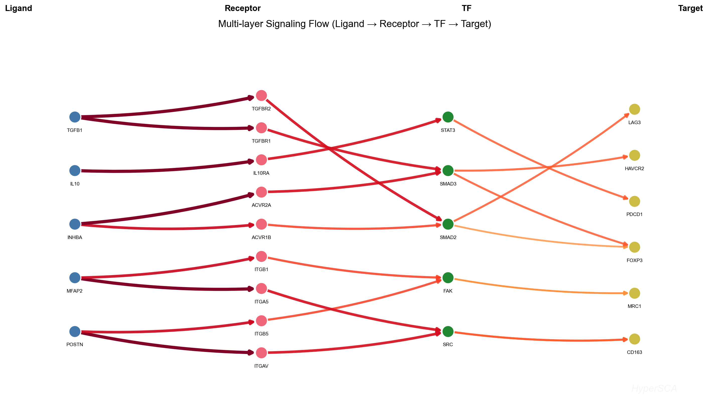
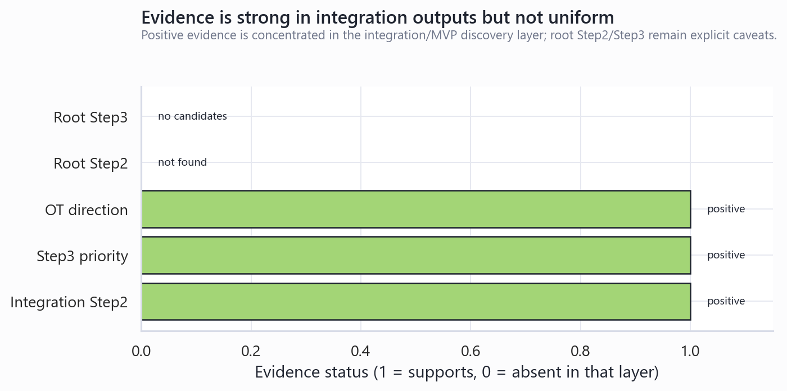
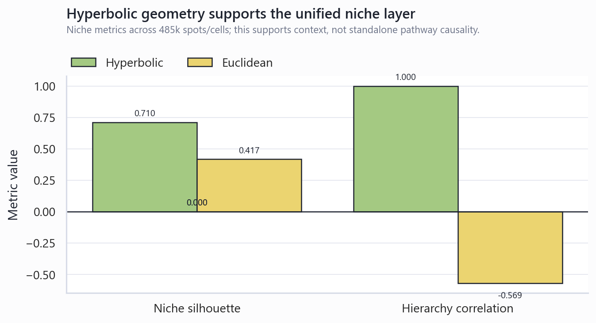
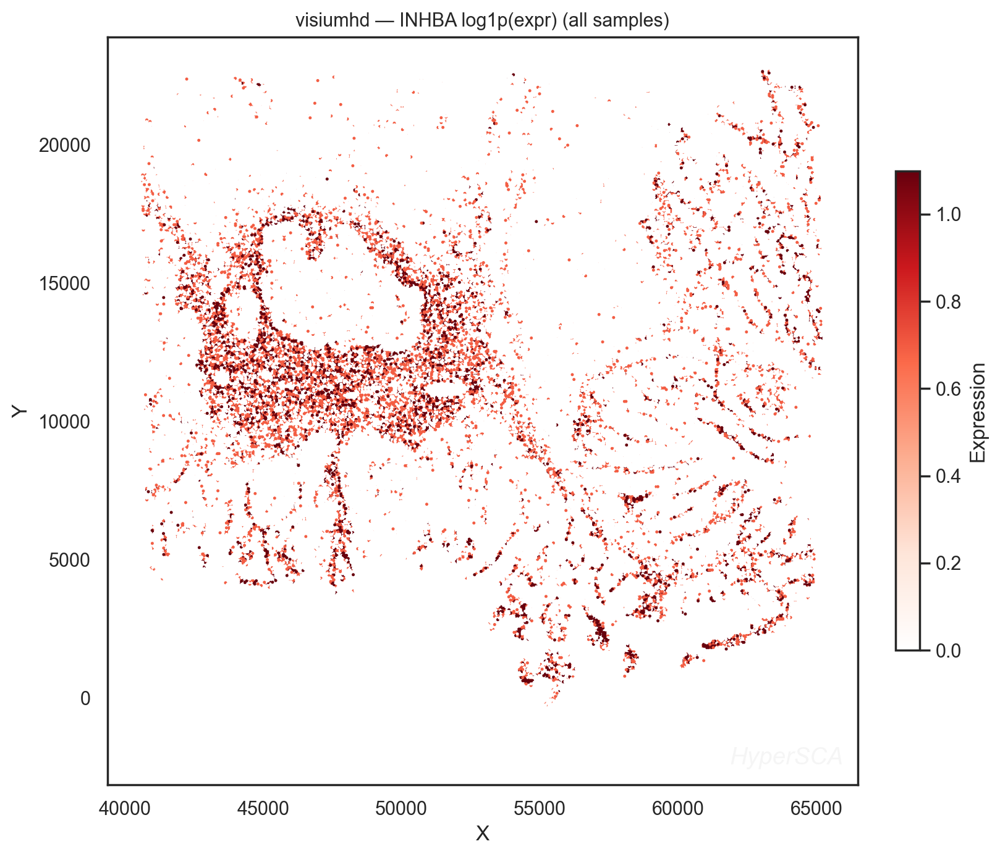

HyperSCA MSS 型结肠癌 Activin-SMAD 通路研究报告
基于当前本地 HyperSCA integration/MVP discovery、OT flow 复现、Step3/Step4 与 root pipeline 输出的证据汇总。生成时间: 2026-06-12T20:54:44。
技术摘要: INHBA-Activin A 轴在整合发现层面成立，但不能写成湿实验因果结论
当前最稳妥的结论是: HyperSCA 的整合/MVP discovery 结果支持一条 CAF-derived INHBA/Activin A → ACVR1B/ACVR2A → SMAD2/SMAD3 → FOXP3 的 CAF→Treg Activin-SMAD 轴。该轴在 Step2 signaling flow 中为 complete pathway，包含 6 条边，覆盖 ligand、receptor、TF、target 四层；在 known-axis 检查中方向为 CAF→Treg，found_forward=true，found_reverse=false。
INHBA 的靶点发现优先级较高: 在 5,873 个候选基因、20 个细胞类型的整合 discovery 报告中，INHBA 排名 #2，总分 0.792，其中 causal=1.000、spatial=0.860、actionability=1.000。Step3 receptor-level ranking 中，INHBA→ACVR2A priority=0.856，INHBA→ACVR1B priority=0.658。
证据需要分层解释: OT flow 复现给出方向一致的空间通信支持，但 Hyperbolic 与 Euclidean 的 Activin-SMAD flow 非常接近；root 标准 Step2 因节点类型缺失未找到 CAF→Treg(INHBA) 轴，root Step3 在当前阈值下无候选。因此报告结论应写为“integration/MVP 层面支持、需要 spot/cell-level 与 wet-lab 验证”，而不是“已证明 Activin-SMAD 驱动 MSS 型 CRC 免疫抑制”。
数据边界: 本报告总结当前本地结果，不做外部文献扩展
主要本地证据
- 整合 discovery 主报告: target_discovery_report.md。
- Hyperbolic Step2 flow: flow_summary.json 与 flow_edges.json。
- INHBA Step3 扰动优先级: targets_INHBA.csv 与 step3_metrics.json。
- 空间通信复现: pathway_summary_all_modes.csv 与 复现说明。
- 不一致证据: root Step2 key_axes_evidence.json 与 root Step3 metrics。
队列和上下文
候选池来自 scCRC_Neu 和 scCRC_ICB，cross-queue genes 为 704。ST_CRC_MSS 的 MSI inference 给出 inferred_status=MSS、confidence=medium、score=-0.686，且 MSS marker gene list 中包含 INHBA。这只支持“样本背景偏 MSS”，不能单独证明 Activin-SMAD 活性。
scCRC_Neu MSS vs MSIscCRC_ICB responseST_CRC_MSSresult-level MVP
通路重建: CAF-derived INHBA 连接到 Treg FOXP3 程序
Step2 signaling flow 将 Activin-SMAD 解析为两条 receptor 分支: INHBA→ACVR1B→SMAD2→FOXP3 和 INHBA→ACVR2A→SMAD3→FOXP3。两条分支共享 causal edge CAF→Treg，并共同指向 Treg 转录程序中的 FOXP3。

结构化 flow edges 如下。注意 ACVR1B receptor_expr=0.000，而 ACVR2A receptor_expr=0.620；因此 receptor-level 干预优先级更偏向 ACVR2A，但 ACVR1B 仍被 prior-guided flow 保留。
| 层级 | 边 | weight | causal edge | 表达/活性字段 |
|---|---|---|---|---|
| 0→1 | INHBA → ACVR1B |
0.247 | CAF→Treg | ligand=5.077; receptor=0.000 |
| 1→2 | ACVR1B → SMAD2 |
0.198 | CAF→Treg | TF=2.851 |
| 2→3 | SMAD2 → FOXP3 |
0.148 | CAF→Treg | target=5.056 |
| 0→1 | INHBA → ACVR2A |
0.300 | CAF→Treg | ligand=5.077; receptor=0.620 |
| 1→2 | ACVR2A → SMAD3 |
0.240 | CAF→Treg | TF=2.413 |
| 2→3 | SMAD3 → FOXP3 |
0.180 | CAF→Treg | target=5.056 |

表达和队列背景: INHBA 的 ICB response 信号强于单纯 MSS-vs-MSI 差异
dataset audit 中，scCRC_ICB response 层面给出更强的 INHBA 变化: Fibroblast response Mid LFC=3.580、padj=1.10e-71；Macrophage response Mid LFC=2.450、padj=1.10e-16。相对地，scCRC_Neu MSS-vs-MSI 中 Macrophage LFC=-0.750、p=0.006、padj=0.068，更适合写为接近显著或上下文提示。
因此，INHBA 在本地结果中的主要叙事不是“泛 MSS 上调”，而是“在 MSS 型 CRC 的免疫治疗 response/non-response 与 CAF/TME 交互背景中，被整合 discovery 选为高优先级 anchor/pathway gene”。
空间通信复现: Activin-SMAD 方向一致，但几何模式差异很小
OT flow 复现将 Activin-SMAD 识别为 6 条 LR/TF/target flow edge。Hyperbolic 模式 total_flow=2.652、mean_flow=0.442、max_flow=0.524，top_source=Fibroblast_S1、top_target=T_cell_regulatory、direction_consistency_rate=1.000。Euclidean 模式 total_flow=2.653，与 Hyperbolic 基本相当。
| mode | n_edges | total_flow | mean_flow | max_flow | top_source | top_target | direction consistency |
|---|---|---|---|---|---|---|---|
| hyperbolic | 6 | 2.652 | 0.442 | 0.524 | Fibroblast_S1 | T_cell_regulatory | 1.000 |
| euclidean | 6 | 2.653 | 0.442 | 0.522 | Fibroblast_S1 | T_cell_regulatory | 1.000 |

反事实扰动: receptor-level ranking 支持 ACVR2A 优先，但 root Step3 没有候选
整合 discovery 的 Step3 对 INHBA 给出 2 个 receptor-level ranked candidates。INHBA→ACVR2A 的 combined_abs_delta=2.283、target_priority_score=0.856，高于 INHBA→ACVR1B 的 0.658。两个候选均记录 prior_hit=True，prior_sources=omnipath。
| interaction | flow weight | delta ligand | delta receptor | combined abs delta | prior | priority |
|---|---|---|---|---|---|---|
INHBA → ACVR2A |
0.300 | -2.128 | -0.155 | 2.283 | omnipath | 0.856 |
INHBA → ACVR1B |
0.247 | -2.128 | 0.000 | 2.128 | omnipath | 0.658 |

INHBA 反事实质量指标显示 r2_mean=0.999953、r2_var=0.999078、MSE=1.12e-04、marker_direction_accuracy=1.000。空间传播方面，gradient_decay_r2=0.594，propagation_depth=2，spatial_causal_correlation=-0.406。

生态位和空间定位: INHBA 更接近 MonocyteRich/FibroRich 生态位背景
统一 niche 结果显示 INHBA enriched niches 为 H3_N07_MonocyteRich (z=2.30), H2_N11_MonocyteRich (z=1.76), H2_N13_FibroRich (z=0.66)。多平台 niche metrics 中，Hyperbolic silhouette=0.710，Euclidean silhouette=0.417，相对提升约 70.1%；hierarchy correlation 为 Hyperbolic 1.000 vs Euclidean -0.569。这支持 Hyperbolic geometry 在统一生态位定义中更稳定，但不是 Activin-SMAD 特异性证明。


动态干预: Step4 支持把 INHBA 纳入干预候选，但分辨率不足
Step4 summary 包含 POSTN、MFAP2、INHBA 三个 targets，组合数 n_combo=6；top_combo 为 POSTN，不是 INHBA。dynamic_target_effects 中 INHBA final_mean_effect=1.000，active_nodes 为空列表。因此 Step4 只能说明 INHBA 已进入动态干预候选集合，不能据此判断 INHBA 是最优组合或具备明确节点级动态传播优势。
结论和下一步验证
- 优先 wet-lab/空间验证: 在 MSS CRC 空间样本中联合检测 INHBA、ACVR2A、SMAD3、FOXP3 与 CAF/Treg 标记，确认空间邻近和细胞类型来源。
- 优先计算复核: 在 spot/cell-level 表达矩阵和真实空间坐标上重跑严格 COMMOT 或等价 OT schema，避免 blended geometry proxy 带来的方向偏差。
- 优先模型稳健性: 修复 root Step2 节点类型映射，使 CAF/Treg/TAM/CD8T 轴在标准 pipeline 与 integration pipeline 中可比。
- 优先机制区分: 分开测试 ACVR2A-SMAD3 与 ACVR1B-SMAD2 两条分支，因为现有 receptor expression 和 Step3 priority 更支持 ACVR2A 分支。
限制和审计记录
- 当前主证据来自 result-level MVP integration，不使用 raw UMI counts；表达和空间传播存在 proxy 依赖。
- 空间传播使用 MDS/blended geometry 相关坐标，不等同于真实组织空间几何。
- Activin-SMAD 是 prior-guided pathway flow，axis evidence 中 bootstrap arrow strength 为 0.0，应避免过强因果措辞。
- root Step2/Step3 未独立复现 CAF→Treg(INHBA) 阳性结果，这是报告中保留的主要反证/缺口。
- 本报告没有进行外部文献系统综述；任何与已发表文献的一致性都需要单独检索和引用。
AI Disclosure: 本报告由 AI 辅助研究工具根据本地 HyperSCA 输出生成。关键数值来自本地 JSON、CSV、Markdown 和 PNG 资产，未加入未经验证的外部文献结论；最终科学解释仍需人工审阅和实验验证。
本地来源索引
完整证据快照: source_inventory.csv，结构化 JSON: evidence_snapshot.json。
| 证据角色 | 本地文件 |
|---|---|
| Discovery 主报告 | target_report |
| Step2 flow summary | flow_summary |
| Step2 flow edges | flow_edges |
| known-axis evidence | axis_results |
| INHBA Step3 priorities | step3_targets |
| INHBA CF/spatial metrics | step3_metrics |
| OT pathway summary | ot_pathway_summary |
| dataset audit | dataset_audit |
| ST_CRC_MSS MSI inference | msi_inference |
| niche metrics | niche_metrics |
| root Step2 caveat | root_axis |
| root Step3 caveat | root_step3_metrics |
| dynamic intervention summary | step4_summary |